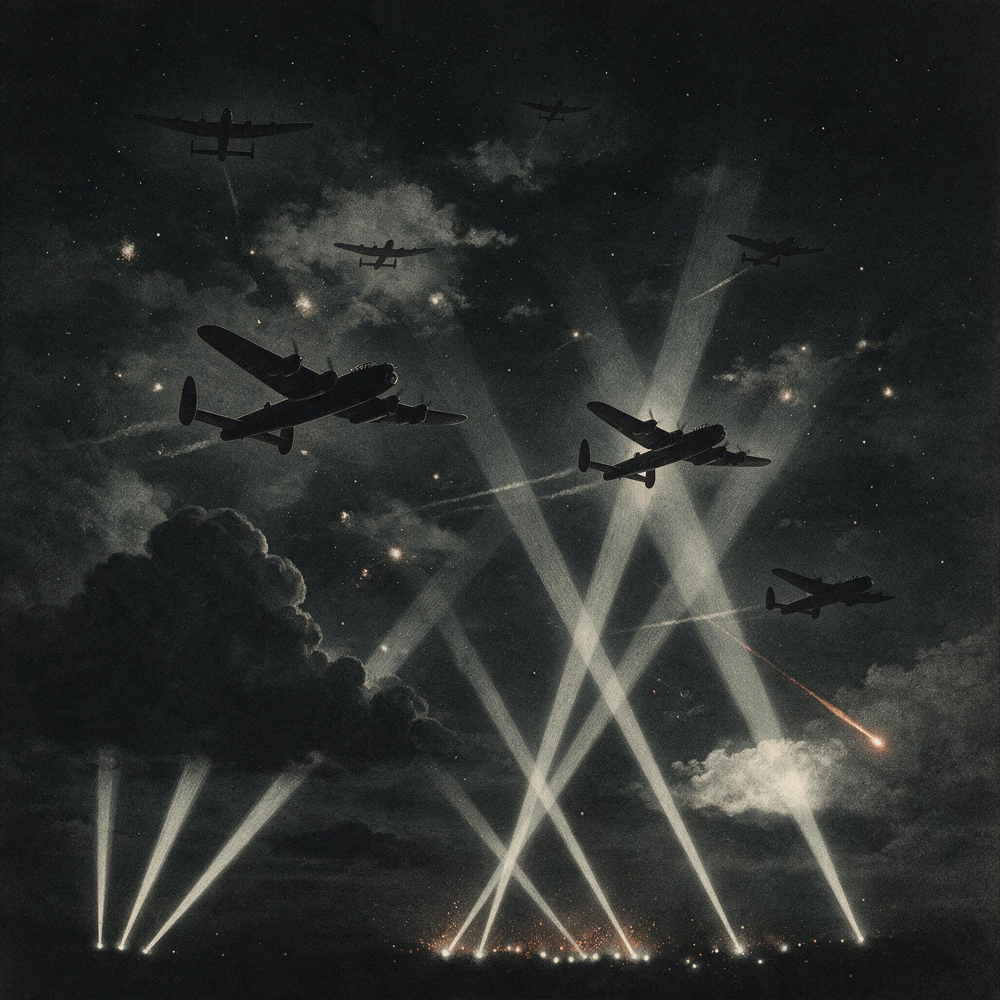

第 9 章
大西洋上的猫鼠
把时钟拨回1942年秋季。皇家海军科学局当时一份内部备忘录，标题平淡无奇：《271型雷达海上试用初步报告》。正文第一段列出了技术参数：波长10厘米、峰值功率25千瓦、对水面潜艇理论

探测距离5.5公里。翻到附件部分，一张手绘的阴极射线管回波草图旁边，有人用钢笔潦草地写道："操作员无法区分浮冰与指挥塔——需紧急制定判读标准。"
这份备忘录夹在硬皮文件夹里从一个办公室传到另一个办公室，每个经手的军官都在页边签了名。
没有人说“这问题不重要”，也没有人知道该把它交给谁去解决。厘米波雷达进入大西洋之战，不是从实验室到军舰的直线装配，而是一场三方角力——物理学家、海军军官和造船厂工程师——在同一个机柜前互不理解。
物理学家带来了磁控管和波导管。他们在实验室里测量过厘米波从金属圆柱体上反射回来的精确波形，知道10厘米波长能够从海面杂波中分辨出U艇指挥塔那样的小目标。
米波雷达做不到——米波波长以米计，波束宽得像是用扫帚在画布上涂抹，海面反射信号淹没了一切。厘米波像一支细笔，能在粗糙的画布上勾出轮廓。实验室数据表明，271型在平静海况下对水面U艇的探测距离超过五千米。
海军军官带来了作战需求。他们知道U艇的战术规律：白天潜航规避，夜间浮出水面用柴油机高速航行并为蓄电池充电。夜暗是邓尼茨狼群战术的安全窗口——米波时代的机载雷达无法在足够远的距离上发现水面U艇，等飞机飞到目视距离时潜艇已经紧急下潜。如果能用雷达在夜间发现浮航的U艇，这个窗口就会被关闭。
造船厂工程师带来了船体结构的约束。271型天线的安装位置需要在护卫舰桅杆高处，但花级轻型护卫舰的桅杆设计从未考虑过加装一个半吨重的旋转天线平台。天线基座的螺栓孔位与舰上原有结构对不上，强行安装意味着在甲板上重新钻孔——在北大西洋冬季浪涌中，每一个新增的孔洞都是船体强度的潜在弱点。
三个人站在同一个机柜前。物理学家敲着机柜外壳说它能看见U艇指挥塔。海军军官盯着阴极射线管上跳跃的绿色光斑问哪个是潜艇哪个是浪尖。造船厂工程师蹲在底座旁边量螺栓间距，说要么重新钻甲板要么回厂重铸底座。他们互不理解不是因为愚蠢或固执，而是因为厘米波雷达作为一个武器系统还缺少最关键的部分：一套将硬件性能转化为作战效能的组织流程。
271型雷达出厂时附带了一本技术手册，包含电路图、电压参数、天线俯仰角调节范围和常见故障排除步骤。
手册没有告诉操作员如何在冬季浪涌中区分浮冰回波和潜艇回波。理论上两者的信号特征不同：金属指挥塔的雷达反射截面积大于冰块，回波应该更尖锐、更强。但理论差异在阴极射线管上被海浪的运动模糊了。
北大西洋冬季浪高经常超过六米，护卫舰自身在波浪中剧烈俯仰——舰艏抬升时天线波束指向天空，下沉时波束打在近处水面上。天线扫过的不是一个稳定的水平面，而是一个不断变形的曲面。
浮冰随浪起伏，回波时强时弱；U艇指挥塔也在浪涌中时隐时现。操作员面对的不是实验室里干净的回波尖峰，而是一片不断跳动、闪烁、变形、消失又重新出现的绿色光斑。判读标准不是在工厂里写出来的，它是在海上被逼出来的。
第一批装备271型雷达的护航舰艇在1942年末进入北大西洋航线后，各舰的无线电军官开始自发记录回波特征。
他们发现浮冰回波在屏幕上的“闪烁频率”与潜艇回波不同：冰块质量小，随浪起伏周期短，回波强度变化快速而零碎；潜艇作为更大的质量体，在浪涌中运动更缓慢沉重，回波强度变化有可感知的滞后。
他们还发现了另一个特征：当雷达天线对准U艇指挥塔时，回波会在特定距离上出现微弱的“二次反射”——雷达波从指挥塔反射到附近海面再反射回天线，在屏幕上表现为紧挨主尖峰的一个小凸起。浮冰回波极少出现这个特征，因为冰块表面不规则，散射了大部分能量。
这些发现不是通过理论推导得出的，而是通过数百小时的观察、比较和反复验证积累起来的。无线电军官们在值班日志的空白处画下回波草图——主峰形状、二次反射位置、杂波背景强度——在靠港休整时互相交换笔记。
一位护航大队的资深雷达官开始用“硬回波”和“软回波”来区分金属目标和冰块：硬回波边缘清晰、强度稳定、二次反射可见；软回波边缘模糊、强度跳跃、无二次反射。这套术语不是官方标准，但在前线传播得比任何官方手册都快——因为它管用。
直到1943年中期，海军部才将这些实战经验系统化为一套正式的判读训练大纲。在此之前的一年多里，271型雷达的作战效能取决于操作员个人的经验和直觉：有的操作员能在杂波中准确辨识出潜艇回波，有的则频繁误报浮冰导致护航舰浪费数小时追逐一块漂流的冰块。
同一套硬件，在不同操作员手中是完全不同的武器。这就是技术扩散中的第一层组织摩擦：硬件先到，知识后到，而知识不是从实验室流向前线的——它是在前线被生产出来，然后缓慢向上游渗透进训练体系。
第二层摩擦发生在皇家空军海岸司令部。海岸司令部在1942年开始接收安装ASV Mark III厘米波雷达的“解放者”远程轰炸机。
前两代ASV使用米波波段，只能在近距离上探测水面潜艇，且最小探测距离太大——当飞机足够接近时，雷达波从海面反射的角度使回波消失在杂波中，形成一个盲区。厘米波缩小了这个盲区，并将探测距离延伸到足够让飞机在U艇下潜前发起攻击。
但ASV III面临的人机交互问题比舰载雷达更棘手。舰载雷达操作员在相对稳定的舱室内工作，可以持续观察屏幕。机载雷达员坐在狭窄的机舱里，飞机在低空巡逻时持续颠簸，发动机轰鸣通过骨传导震动着内耳。
一次典型的大西洋反潜巡逻持续六到八小时，大部分时间海面上空无一物。雷达员盯着屏幕上重复扫过的亮线，一小时接一小时，注意力在这种单调中不可抗拒地衰减。
U艇下潜后留下的痕迹在雷达屏幕上只持续几十秒。当一艘U艇紧急下潜时，螺旋桨搅起的尾流和艇体排出的油迹会在海面上形成一片短暂的平滑区域，被称为“油迹尾流”。这片区域对雷达波的反射率与周围波浪不同，ASV III的厘米波波束能够捕捉到这种差异，但信号微弱且转瞬即逝。一个注意力衰减的雷达员很可能错过它，而一旦错过，U艇就消失在几百米深的水下，飞机只能重新开始搜索——而U艇已经知道有飞机在附近活动。
海岸司令部的作战记录显示了一个令人不安的差距：1942年末到1943年初，装备ASV III的飞机对U艇的发现率并未达到实验室预测的水平。
技术参数说探测距离五千米以上，实际操作中平均发现距离不到三千米。差距不在硬件性能上——硬件在实验室里确实能达到五千米的指标。差距在人的感知能力和操作流程上。
雷达员需要定期轮换以防止注意力衰减，但早期巡逻任务的人员编成没有考虑这个需求。搜索航线需要根据海况和能见度动态调整，但飞行计划通常在起飞前就固定下来。发现可疑回波后需要一套标准化的确认程序，但早期条令只规定了“发现目标后立即报告”，没有明确报告之后的操作步骤。
这些都不是技术问题，但如果它们不解决，技术优势就无法转化为作战效能。海岸司令部花了将近半年时间将这些经验固化为战术条令。
1943年春，修订后的反潜巡逻手册明确规定了三件事：雷达员轮换周期不超过两小时；搜索高度与速度根据海况分三级动态调整；发现回波后执行三级确认流程——初步识别、航线修正逼近、二次确认攻击。此后发现率开始上升。
但这不是故事的终点。真正改变大西洋之战走势的，不是某一种雷达的性能提升，而是英国在1943年春季完成的一次指挥体系重组。这次重组将三个原本分离的信息流整合进了一个闭环：密码破译部门提供的“Ultra”情报、高频测向站截获的U艇无线电信号方位数据、以及护航舰艇和反潜飞机的雷达接触报告。
在此之前，这三条信息流各自流向不同的终端。Ultra情报高度机密——布莱切利园破译的德国海军恩尼格玛通信——传递链条冗长且严格受限：情报先送到海军部潜艇追踪室，经过脱密处理后转发给各海区司令部，再由海区司令部决定是否告知护航大队指挥官。这个链条走完通常需要几个小时甚至更久，而U艇群的位置信息在这几个小时内可能已经过时。
高频测向数据由岸基站收集后逐级上报。英国在大西洋两岸布设了数十个高频测向站，能够通过三角定位确定U艇发报的大致位置，但这个数据流向的是岸基情报分析部门，不是海上护航指挥官。雷达接触报告则留在各护航大队的战术层面：一艘护卫舰发现U艇回波后向大队指挥官报告，指挥官据此调整队形和航线，但这个信息很少向上传递到能够看到全局的指挥层级。
一个U艇群的位置可能同时被三个渠道感知到：Ultra截获了它的行动命令，高频测向捕捉了它的发报方位，某艘护航舰的雷达在夜间扫到了它的指挥塔。但这些碎片化的信息没有在作战决策层面汇聚成一个完整的态势图。
重组后的体系建立了一个联合情报中心——位于利物浦的德比大厦内——将三条信息流实时汇聚并交叉验证。
一份典型的作战指令格式说明了这种整合的深度：指令抬头列出目标海域坐标，来自Ultra截获的U艇群集结命令；正文标注了高频测向站捕捉到的三艘U艇发报方位，这些方位与坐标相互印证——如果Ultra说U艇群将在某海域集结，而高频测向显示该海域确实有多艘U艇发报活动，情报的可信度就大幅提高；指令附件注明了护航大队上一轮巡逻的雷达接触记录，提供了U艇群运动方向的补充线索——雷达接触的时间、位置和回波特征与高频测向方位的时间序列叠加，可以推断出U艇群的航向和速度。
三个信息源各自都不完整：Ultra只截获了部分通信，德国海军经常更换密码本和加密程序，布莱切利园的破译时断时续；高频测向只能给出大致方位，误差范围随距离增大而扩大；雷达接触受限于搜索范围，一架飞机或一艘军舰只能覆盖有限区域。
但三者叠加在一起，就能勾勒出狼群的位置、规模和动向。这就是“锋线整合”在大西洋之战中的具体形态：不是某一项技术单独发挥作用，而是将多种技术手段嵌入一个统一的指挥链和信息处理流程中。厘米波雷达是这套体系的眼睛——它能在夜间看见浮出水面的U艇——但眼睛必须连接到一个能够处理视觉信息并做出反应的大脑上。这个大脑就是德比大厦的联合情报中心，它的神经末梢延伸到布莱切利园的解密室、沿海的高频测向站，以及每一艘在北大西洋航线上巡逻的护航舰和反潜飞机。
1943年5月，“黑色五月”降临德国U艇部队。这个月里盟军在大西洋击沉了41艘德国潜艇，是整个战争期间U艇部队损失最惨重的单月记录。
其中多艘在夜间浮航充电时被厘米波雷达截获：271型从护航舰上捕捉到指挥塔的回波，或者ASV III从空中锁定水面航行的U艇。
夜间浮航充电曾经是邓尼茨狼群战术的安全窗口：白天潜艇潜伏水下规避空中巡逻，夜间浮出水面用柴油机高速航行追及护航船队并为蓄电池充电以维持次日的潜航能力。米波时代的机载雷达无法在安全距离外发现水面U艇，等飞机飞到目视距离时潜艇已经紧急下潜消失在黑暗中。
厘米波改变了这个时间窗口：271型和ASV III能在五千米外发现水面U艇，飞机或护航舰有足够的时间逼近并发起攻击。
邓尼茨的战术算法建立在夜暗掩护的前提上。当夜暗不再提供掩护时——当盟军能在完全黑暗的条件下“看见”水面上的U艇时——狼群战术的数学基础就动摇了。
但“黑色五月”的41艘战果不能简单归因于厘米波雷达的技术优势。那个月里还有其他变量在同时作用：盟军增加了护航航母的部署，将空中掩护延伸到整个北大西洋航线；反潜飞机数量大幅增加，使U艇更难安全浮航；护航舰艇经过两年实战磨练，战术协同更加熟练；而德国方面因为恩尼格玛密码被破译丧失了行动突然性——许多U艇在抵达攻击阵位之前就被重新路由的护航船队绕开了。
厘米波雷达是这些因素中的一个关键环节，它提供了夜间探测能力，这是其他手段无法替代的。
但这个能力只有在整合进护航指挥体系、高频测向网络和Ultra情报闭环之后才能充分发挥效力。如果德比大厦没有将三条信息流汇聚成统一的态势图，如果Ultra情报仍然在冗长的传递链条中失去时效，如果高频测向数据仍然停留在岸基分析部门而不是实时传递给海上指挥官，如果雷达接触报告仍然只是战术层面的孤立信息——那么厘米波雷达仍然能发现一些U艇，但无法系统性地关闭邓尼茨的安全窗口。“黑色五月”的41艘战果就不会以那种系统化、持续性的方式发生。
这就是全书核心论点的实战检验：雷达战的胜负从来不只在技术本身，而在把技术嵌进组织与制度的速度。英国赢在把简陋的271型雷达接进了一个经过重组的、整合了多重信息流的指挥链；德国输在没有及时意识到对手的技术跃进，而这个滞后本身又根源于更深层的制度缺陷。
德国海军直到1943年秋季才意识到盟军雷达已经进入厘米波段。这个技术评估的滞后不是偶然的。纳粹德国的雷达研发分散在多个互不统属的机构之间：空军有自己独立的雷达项目，海军有另一套体系，两家在频率分配、技术标准和情报共享上几乎没有协同。
戈林的空军把持着大部分高频电子技术的研发资源——空军需要雷达来引导夜间战斗机和指挥高射炮——海军在争取厘米波研究经费时屡屡受挫。
当英国的磁控管已经在贝尔实验室进入量产阶段时，德国的厘米波研究还停留在实验室样品阶段。
不是因为没有能力造出磁控管——德国物理学家汉斯·霍夫曼在1941年就研制出了多腔磁控管的实验样品，性能不逊于英国的原始设计——而是因为没有跨军种的协调机制将科研资源集中投入到这个方向并推动量产。
更致命的是情报评估的断裂。德国海军情报局在1942年就获得了盟军使用机载雷达攻击U艇的报告——幸存艇员描述了夜间在没有月光的情况下被飞机精确攻击的经历，这只能用机载雷达来解释。但情报分析人员试图用已知的技术框架来理解这些报告：他们推测盟军可能改进了米波雷达的性能，或者使用了某种被动探测装置。没有人认真考虑盟军已经突破厘米波波段的可能性。
为什么？因为德国自己的厘米波研发进展缓慢，他们以己度人地认为对手也面临同样的技术瓶颈。
这是一种经典的认知偏误，但不是个人层面的，而是制度层面的：没有一个集中的电子情报分析机构来系统研究被击沉U艇的最后无线电报告、幸存艇员的目击证词以及侦听到的盟军雷达信号特征。这些碎片化的信息分散在不同部门手中——海军情报局有一部分，空军信号情报机构有另一部分，潜艇司令部还有一部分——没有人将它们拼成一幅完整的图像。
直到1943年秋天，从一架被击落的盟军反潜飞机残骸中缴获的ASV III雷达残件才让德国人第一次确认了厘米波雷达的存在。拆开残损的机柜，里面的磁控管和波导管组件清楚地表明：盟军不仅突破了厘米波波段，而且已经实现了大规模量产和实战部署。此时距离271型雷达首次装备英国护航舰已经过去了一年多。
德国人开始仓促应对。他们的应急方案是一种名为“梅托克斯”的雷达接收机，本质上是一个宽频带无线电接收器，能够截获盟军雷达发射的厘米波信号并在U艇指挥舱内发出警报。梅托克斯的工作原理很简单：天线接收厘米波段的电磁信号，接收机检测信号强度，当强度超过预设阈值时触发音频警报。如果盟军飞机或军舰打开雷达并照射到U艇，梅托克斯就会响起尖锐的鸣叫声，提示潜艇立即下潜。
从技术角度看，这是一个合理的应急方案：研发周期短——从确认厘米波威胁到首批量产只用了几个星期；生产成本低——不需要精密加工或稀有材料；不需要修改潜艇结构——天线安装在现有指挥塔围壳上；能够提供直接的威胁预警。
但它有一个致命的局限性：它是被动的。被动意味着它只能告诉你“有人在用雷达找你”，不能告诉你对方在哪里、距离多远、是否已经发现了你。它无法区分一架远距离巡逻的飞机和一艘正在逼近的护航舰发出的雷达信号——两者的信号强度可能完全不同，但在梅托克斯的扬声器里都是同样的鸣叫声。它也无法判断对方是否已经锁定了你的位置并正在引导攻击——因为厘米波雷达的窄波束特性意味着只有当波束直接扫过U艇时梅托克斯才会报警，而一次短暂的报警可能意味着对方只是扫到了你一下就过去了，也可能意味着对方正在持续跟踪并不断修正攻击航线。
更微妙的问题在于：梅托克斯接收的是对方雷达发射的信号。但如果对方不使用雷达呢？如果盟军飞机通过高频测向或者Ultra情报已经大致知道了U艇的位置，然后关闭雷达悄悄接近呢？如果盟军开发出了新的频率捷变技术让梅托克斯无法截获呢？如果盟军利用梅托克斯的报警特性设下声东击西的陷阱呢？
这些问题在1943年末还没有浮现到德国U艇部队指挥官的桌面上。他们只知道一件事：自从装备了梅托克斯之后，夜间被突然袭击的情况有所减少——至少潜艇能在被雷达锁定之前得到几秒钟的预警时间下潜逃生。
但这几秒钟的预警是以一种被动姿态换来的：U艇放弃了夜间浮航的行动自由，变成了一个只能等待对方先发射电磁波然后仓促下潜的目标。
梅托克斯没有夺回夜间浮航的安全窗口，它只是让U艇在被发现后逃生的概率稍微提高了一点。而这恰恰是德国海军尚未意识到的陷阱：他们正在用一套被动防御装置来应对一个主动探测体系，而这个体系的背后是一个整合了密码破译、高频测向和雷达搜索的完整闭环。
站在1943年末的时间节点上回看大西洋之战的转折，“黑色五月”的意义不在于41艘这个数字本身——尽管这个数字确实触目惊心。
它的意义在于暴露了两种截然不同的战争机器在面对技术变革时的适应速度差异。
英国方面将厘米波雷达嵌入了已经运行多年的护航指挥体系、高频测向网络和Ultra情报闭环之中。这个过程充满了混乱和摩擦：操作员不会判读回波、雷达员注意力衰减、各部门之间的信息共享磕磕绊绊、训练大纲滞后于实战需求一年多。但这些摩擦发生在同一个制度框架内部——皇家海军和海岸司令部有统一的指挥链、有标准化的训练体系、有前线反馈驱动条令修订的机制。摩擦被逐步消化为经验，经验被系统化为条令，条令被嵌入指挥流程。
德国方面则在另一个方向上遭遇了制度性困境：割裂的研发体系导致厘米波技术落后于对手至少一年；分散的情报分析未能及时识别威胁性质；应急反应导向了一个被动防御装置而非体系性的战术调整。
这些不是技术能力的差距——德国的电子工程师完全有能力设计出性能优良的厘米波接收机，梅托克斯本身就是证明：它在短时间内从设计走向量产并在实战中证明了基本功能。差距在于组织整合能力：将新技术嵌入现有指挥链的速度，跨部门协调资源的能力，从前线反馈中快速学习和调整的能力。
大西洋上的猫鼠游戏还远未结束。梅托克斯接收机只是反制螺旋的第一圈转动。接下来双方将在电子战的幽暗水域中继续追逐：频率捷变、信号欺骗、被动定位、主动干扰——每一项新技术都会催生对应的反制措施，每一次反制又会引发新一轮的技术突破和组织调整。
厘米波雷达让U艇丧失了夜暗的掩护，梅托克斯试图夺回一点点预警时间。但这场游戏的规则已经被永久改变了：看不见的锋线不再只是探测与隐藏之间的较量，而是变成了探测、反制、反反制之间永不停歇的螺旋上升。在这个螺旋中，决定胜负的不再是谁先发明了更好的硬件，而是谁能更快地将新能力嵌入指挥链、更快地预见到技术扩散后的反制后果、更快地在组织层面完成下一轮调整。
大西洋的海浪冲刷着一切：浮冰和指挥塔的回波曾经在阴极射线管上难以分辨，现在梅托克斯接收机的尖锐鸣叫声又为这场猫鼠游戏增添了新的变数。但水下的问题依然是同一个：当你的传感器改变了游戏规则时，你的组织是否跟上了变化的速度？
德国U艇部队在1943年末给出的答案是梅托克斯——一个被动装置，一个应急反应，一个基于“对方一定会发射电磁波”这一假设的防御方案。
这个假设本身即将成为一个新的误解源头。而这一次，误解的代价将由那些坐在U艇指挥舱里、听着梅托克斯鸣叫声仓促下潜的人来承担。